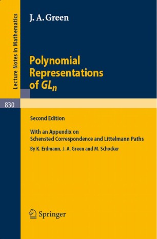
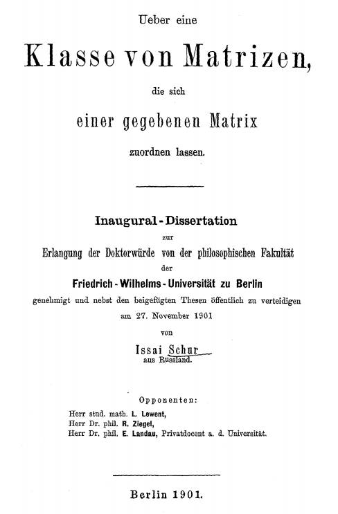
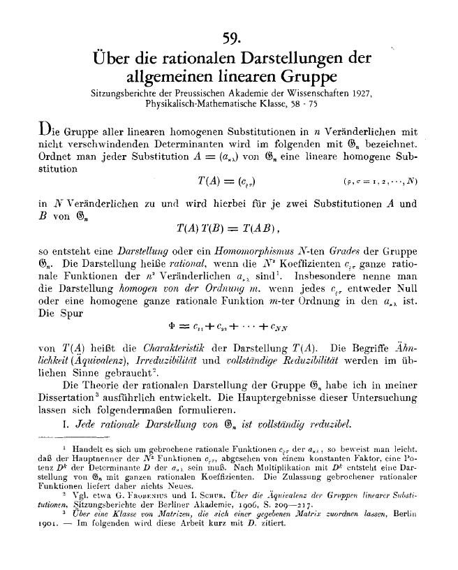
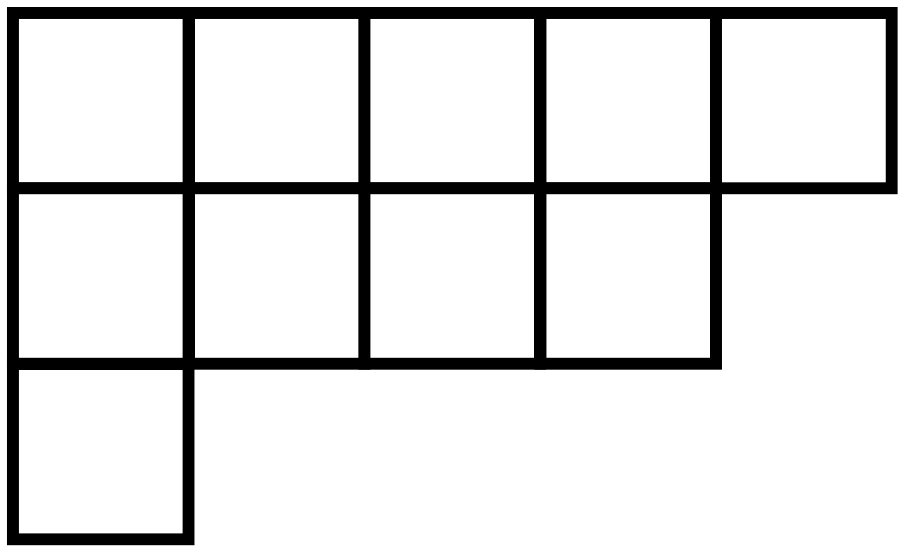
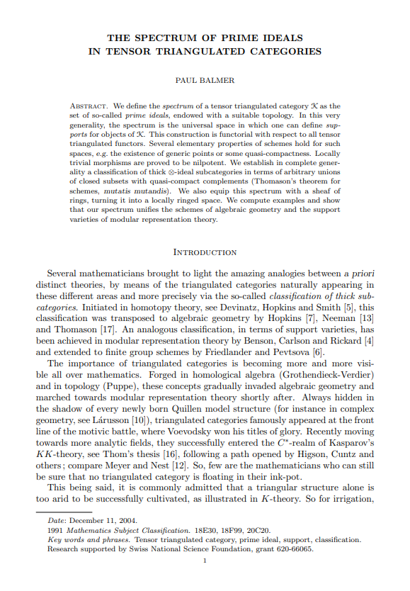
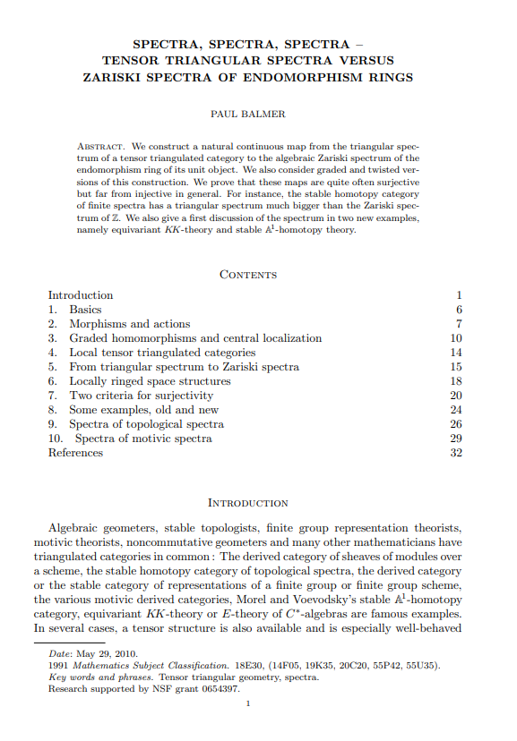

Slides for this presentation (as well as the master's thesis it was based on) can be found
at
https://nicocourts.com/links
Part I: Schur-Weyl Duality
References for Polynomial representations and Schur algebras

Polynomial Representations of $\operatorname{GL}_n$ by Sandy Green
(link to Springer page)

Issai Schur's thesis: "On a class of matrices that can be assigned to a given matrix"
(link to pdf) [auf Deutsch!]

Issai Schur's paper: "On the rational representations of the general linear group" in Gesammelte Abhandlungen III (hard to find digitally!)
(link to Springer page) [auf Deutsch!]
Representations of $\mathfrak{S}_n$
The representation theory for the symmetric group $\mathfrak{S}_n$ over $\mathbb{C}$ is
completely controlled by its irreducible representations. These are in bijection with partitions of $n$.

Young diagram corresponding to the partition (5,4,1) of 10.
The connection is cycle type: e.g.
$\sigma=(1\,5\,7\,2\,6)(9\,3\,8\,4)(10)\in\mathfrak{S}_{10}$
is of the form above.
(Polynomial) Representations of $\mathrm{GL}_n(\mathbb{C})$
An polynomial representationAn non-polynomial representation
Given a representation $\rho:\operatorname{GL}_n\to \operatorname{GL}_m$, we say that
$\rho$ is polynomial if (there exist bases such that) the maps are polynomials
in the input coordinates.
(Polynomial) Representations of $\mathrm{GL}_n(\mathbb{C})$
An polynomial representationAn non-polynomial representation
Given a representation $\rho:\operatorname{GL}_n\to \operatorname{GL}_m$
Homogeneous polynomial representations
One can use the usual notion of homogeneity to define the
homogeneous degree $d$ polynomial representations of $\operatorname{GL}_n$.
We denote by $P_k(n,d)=P(n,d)$ the category of homogeneous degree $d$ polynomial representations of $\operatorname{GL}_n$ over $k$.
Other ways to define the category
The module category for the Schur algebra $S(n,d)$
Dual of a subcoalgebra of the ring of functions on the group scheme $\operatorname{GL}_n$
Strict polynomial functors (Friedlander-Suslin)
Objects are endo"functors" on $\operatorname{Vect}_k,$ such that the
maps of morphisms are (homogeneous degree $d$) polynomial maps.
Strict polynomial functors (Krause)
Let $\Gamma^d P_k$ be the category of vector spaces with $\operatorname{Hom}_{\Gamma^d P_k}(V,W)=\Gamma^d\operatorname{Hom}_k(V,W)$. Then $P(n,d)\simeq \operatorname{Rep}(\Gamma^dP_k)=\operatorname{Func}(\Gamma^d P_k,\operatorname{Vect}_k).$
The Schur-Weyl Functor
One can develop a theory of weights for $P(n,d)$ and for $d\le n$, there is a particular weight $\omega$
such that taking the $\omega$ weight space induces a functor
$$\mathcal{F}:P(n,d)\to\operatorname{Rep}(\mathfrak{S}_d)\quad\text{via}\quad \mathcal{F}(M)=M^\omega$$
along with an opposing functor
$$\mathcal G:\operatorname{Rep}(\mathfrak{S}_d)\to P(n,d),$$
both of which preserve simples.
More general fields
If $k$ is any infinite field of characteristic 0 or $p>d$, we are in the semisimple case and the representation theory
is mirrored in these two categories $P_k(n,d)$ and $\operatorname{Rep}_k(\mathfrak{S}_d)$.
In the modular case, things get more interesting....
Part II: The Balmer Spectrum
References for Balmer Spectra

The spectrum of prime ideals in tensor triangulated categories by Paul Balmer
(link to pdf)

Spectra, Spectra, Spectra by Paul Balmer
(link to pdf)
A question
How do we have a chance of studying the category of representations of something that has complicated representation type (i.e. lots of non-isomorphic indecomposables)?
A possible answer
Use a coarser notion of similarity than isomorphism type.
Intuition from commutative algebra
Objects like DVRs and Dedekind domains are nice to study because their spectra have nice structure.
We don't need to compute things on the individual elements of these rings to say strong things about them.
The Balmer spectrum
If our representation category (or a suitable analog) is "enough like a ring" we can compute the Balmer spectrum of prime (thick tensor) ideals.
It ends up that being "enough like a ring" can be justifiably interpreted as being a tensor triangulated category (TTC).
There are several places these arise in nature.
Examples of TTCs
The stable homotopy category with smash product
The stable module category $\operatorname{stab}(kG)$
The bounded derived category $\operatorname{D}^\mathrm{b}(A)$ for an algebra $A$ (with derived $\otimes$)
Cool Results
[Balmer, Thomason] If $X$ is a topologically Noetherian scheme, then
$$\operatorname{Spec}_\mathrm{Bal}\mathrm{D}^\mathrm{perf}(\mathrm{coh}(X))\cong X$$
as ringed spaces.
[Balmer, Friedlander-Pevtsova] If $G$ is a finite group scheme over $k$,
$$\operatorname{Spec}_\mathrm{Bal}(\operatorname{stab}(kG))\cong \operatorname{Proj}(H^\bullet(G,k)).$$
Part III: Putting it together
A leg up
In 2013, Krause gave (pdf) a construction of $P(n,d)$ that more easily admitted a description of a monoidal structure.
In 2017, Aquilino and Reischuk showed (pdf) that the Schur-Weyl functor was monoidal!
A connecting idea
If we are interested in computing the spectrum of $\mathrm{D}^\mathrm{b}(S(n,d))$, perhaps we can use the structure of
$$\operatorname{Spec}_\mathrm{Bal}(\operatorname{stab}(k\mathfrak{S}_d))\cong \operatorname{Proj}(H^\bullet(\mathfrak{S}_d,k))$$
to say something about it, leveraging the monoidicity of the Schur-Weyl functor.
Thank you!
Further Reading
Besides the earlier references, the following can provide further directions for the interested reader.